文字
背景
行間

カテゴリ:今日の出来事
 英語拠点校事業による公開授業の実施について
英語拠点校事業による公開授業の実施について
１０月２６日（木）、県教育委員会指定の英語教育拠点校の事業の一つとして、公開授業を実施しました。今年度は、千葉県内の公立私立の小・中・高等学校を対象に参加を呼びかけ、当日は１４名の先生方の参加となりました。本校教員による２時間の授業を参観後、東京歯科大学教育講座准教授 今井肇先生の講演「ChatGPTが英語教育にもたらすもの」、研究協議、指導助言の日程で進めました。研究協議では、具体的な授業の進め方等について、校種を超えて活発な意見交換をすることができ、大変意義ある研究協議となりました。この会の成果を各校に持ちかえって授業改善に役立てることが期待されます。
 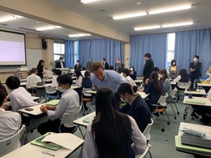
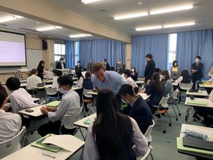
英語科では面接練習を行っています
英検２次試験を週末に控え、英語科では昼休みや放課後に面接練習を行っています。佐倉高校では、希望者を対象に、英検２級の試験を年間３回、準会場として実施しています。１次試験の結果が出た後、ALTの先生はじめ、英語科の職員で希望する生徒一人ひとりに２次試験対策を行います。最近では、従来型の英検だけでなく、特に準１級を中心に、CBT試験を受験する生徒も増えてきました。随時、ライティングの添削やスピーキングの練習を行い、資格取得をサポートしています。


 第３回開かれた学校づくり委員会が行われました。
第３回開かれた学校づくり委員会が行われました。
１月２７（金）１５時から、「第３回開かれた学校づくり委員会」が行われました。
地域住民、同窓会、最寄り駅、地域教育関係、保護者の各代表者を交えて、様々な視点から本校の教育活動に対する様々なご意見をいただく機会となりました。いただいた助言をもとに今後の改善につなげてまいります。
今回は、部活動の見学もしていただきました。


令和４年度後期防災避難訓練


11月18日（金）海外理解促進のための講演会（第1学年）
 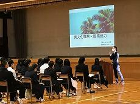
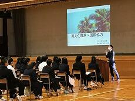
 せんせいっていいもんだ
せんせいっていいもんだ
講師は、採用3年目の中学校の先生で、本校の卒業生でもあります。
1年生16名が参加し、仕事の内容や先生になるための道のり、やりがい等についての話がありました。
スマホやタブレットを活用しての参加型の講座になり、本校の1年生も積極的に質問等を行いました。

「気付く・探る・考える」講演会
それを実感してもらおうと、10月11日(火)、1学年全生徒対象に「気付く・探る・考える」講演会を開催しました。講師にお迎えしたのは、東京外国語大学・大学院総合国際学研究院の篠田英朗教授。演題は、世界の問いである「ロシア・ウクライナ戦争で考える国際社会の安全保障システム」。単純に善悪のレッテルを貼るのではなく、論理的に原因分析をする。分析の手順は、個人・国家・国際関係と、視点ごとに分割する。その過程で自分独自の問いを立て、その観点から分析を深め、更に更に考え続ける。正当な学問の手順を学ぶ機会となりました。

前期防災訓練
 8月29日(月) 夏季休業が明け、学校が再開しました。
8月29日(月) 夏季休業が明け、学校が再開しました。本日は大掃除と授業の後、前期の防災訓練を行いました。今回は、地震による火災の発生を想定し、非常時の避難経路と行動の仕方を確認しました。
令和4年度学校説明会
次回の学校説明会は、10月29日(土)に実施予定です。

 エピペン・AED研修会
エピペン・AED研修会
アナフィラキシーやAEDに関する基礎知識を学び、症状への対応手順を確認しました。
また、エピペンについてはトレーナーを使用し、実践練習をしました。
現在本校のAEDは、本館昇降口、体育館入口、家庭科室入口の三か所に設置してあります。
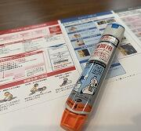 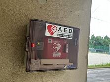
1学年 探究学習 ～伝える探究文化～
１学年、普通科を対象として、体育館で探究学習の授業が行われました。
本時は、３年生が取り組んできた探究学習の成果発表を聞きました。
３年生は、１・２年次に、テーマを決めて探究学習を進めてきました。今回は、昨年度まで研究してきた内容について英語での発表を含めて、４種類の発表を行いました。
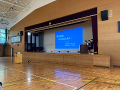 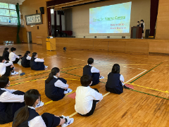
この時間の目的は、佐倉高校生が育んできた課題研究の文化や取り組みを１年生に知ってもらうための機会として設けられています。
１年生は、これから総合的な探究の時間で、各自テーマを決めて研究を始めます。
最後には、３年生のような研究ができるように取り組んでほしいと思います。
 教育相談職員研修
教育相談職員研修
生徒を取り巻く環境の変化や具体的な事例を取り上げ、生徒に寄り添った効果的な支援について学びました。
個のニーズに応じた支援の重要性を再確認できた貴重な機会となりました。
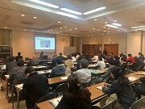
第74回卒業証書授与式

後期授業再開＆賞状伝達式
 1月7日(金) 昨夜の大雪の影響を受けつつ、後期授業を再開しました。１・２年生は冬季休業明けの課題テストが実施され、放課後には賞状伝達もありました。表彰内容は以下のとおりです。
1月7日(金) 昨夜の大雪の影響を受けつつ、後期授業を再開しました。１・２年生は冬季休業明けの課題テストが実施され、放課後には賞状伝達もありました。表彰内容は以下のとおりです。☆ 第72回千葉県高等学校生徒英語研究発表会(スピーチコンテスト)
リーディング部門第４位
☆ 第15回高校生理科研究発表会奨励賞
「鉛直下向きの流氷の物体衝突時に見られる層状連結雫の研究」
「海洋中のマイクロプラスチックの回収方法についての研究
～海洋汚染を止める手立てとなり得るのか～」
☆ 第33回千葉県高等学校総合文化祭書道作品展 優秀賞
☆ 第21回日本情報オリンピック敢闘賞
令和3年度地域交流懇談会(1000か所ミニ集会）
県教委による英語教育拠点校学校訪問
教育課程実践検証協力校事業に係る学校訪問
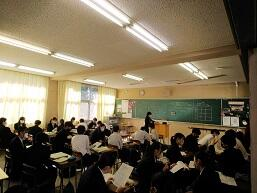
令和３年度 第３回学校説明会
 10月30日(土) 第３回学校説明会が行われ、中学生・保護者合わせて約130名のご参加をいただきました。第１・２回と同様に本校概要や教育課程、入学者選抜、ＳＳＨ・理数科の取組等について説明しました。部活動見学や校舎内見学は今回も控えさせていただきました。
10月30日(土) 第３回学校説明会が行われ、中学生・保護者合わせて約130名のご参加をいただきました。第１・２回と同様に本校概要や教育課程、入学者選抜、ＳＳＨ・理数科の取組等について説明しました。部活動見学や校舎内見学は今回も控えさせていただきました。今年度もコロナ禍で説明会の実施も危ぶまれるところでしたが、第1・2回と合わせて延べ約1400名の方にご参加いただきました。ありがとうございました。
１学年「気付く・探る・考える」講演会
また、普段聞くことのできない大学教授の話を聞けたことは、


大学入学共通テスト出願説明会
9月7日(火)３学年を対象とした大学入学共通テスト出願説明会を行いました。感染症防止のため、学年を一堂に集めての集会は難しいことから、学年を半分の人数にわけ、体育館での説明会と、教室での志願票記入の２分割で実施しました。
第１・２回 学校説明会

 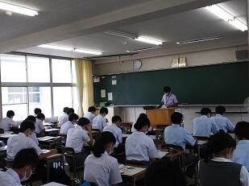
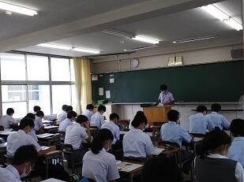
令和３年度非常登庁訓練（佐倉市）が行われました。
本日８時半から、本校を会場に、佐倉市職員８名と本校職員２名（副校長、事務主幹）が参加して、
「令和３年度非常登庁訓練」が行われました。
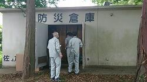

 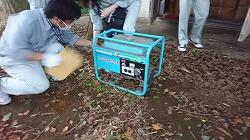
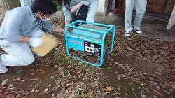情報伝達訓練、防災備蓄倉庫内点検、発電機稼働訓練、簡易ベッドとパーテーションの組立訓練、
特設公衆電話使用訓練、意見交換会等が行われました。
 小学校初任者研修「理科観察・実験実習研修」が行なわれました。
小学校初任者研修「理科観察・実験実習研修」が行なわれました。
「児童の関心・意欲を高める教材開発や実験操作の基本及び理科室の運営等について学ぶ。」
ことを目的に、小学校初任者研修「理科観察・実験実習研修」が行なわれました。
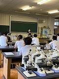 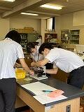


 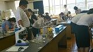
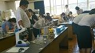  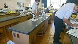
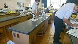北総教育事務所指導主事、県総合教育センター研究指導主事、成田市立大栄みらい学園教諭、成田市立美郷台小学校教諭、
本校からは西村教諭〔理科（生物）〕が講師として指導助言を行いました。
スクールロイヤーによる人権講演会
 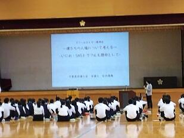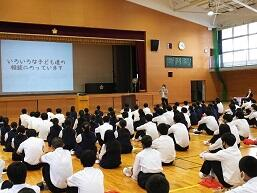
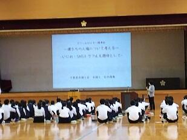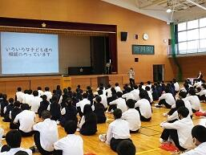 第１回 開かれた学校づくり委員会
 6月18日(金) 10:00-11:30 令和３年度 第１回 開かれた学校づくり委員会が行なわれました。同窓会、ＰＴＡの代表、近隣中学校、京成佐倉駅の方々などをお招きし、本校での取組などを紹介した後、佐倉高校と地域との連携、佐倉高校に求めることなどについて意見交換をしました。また、令和3年3月31日付けで学校教育法施行規則の一部が改正されたことで策定を求められているスクール・ポリシーについての意見も伺うことができました。次回は９月に本委員会が主催する1000ヶ所ミニ集会でより活発な意見交換を行なうこととなりました。
6月18日(金) 10:00-11:30 令和３年度 第１回 開かれた学校づくり委員会が行なわれました。同窓会、ＰＴＡの代表、近隣中学校、京成佐倉駅の方々などをお招きし、本校での取組などを紹介した後、佐倉高校と地域との連携、佐倉高校に求めることなどについて意見交換をしました。また、令和3年3月31日付けで学校教育法施行規則の一部が改正されたことで策定を求められているスクール・ポリシーについての意見も伺うことができました。次回は９月に本委員会が主催する1000ヶ所ミニ集会でより活発な意見交換を行なうこととなりました。 球技大会（第１回）
男子 ソフトボール ３年Ｈ組 女子 ドッジボール ３年Ｇ組
サッカー ３年Ｄ組 サッカー ３年Ｄ組
バレーボール ３年Ｅ組 バレーボール ３年Ｃ組
 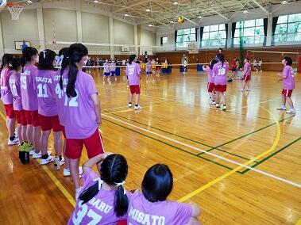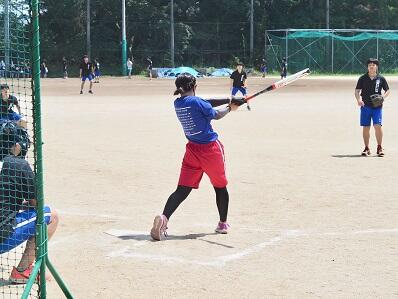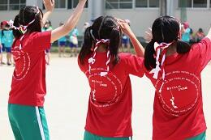
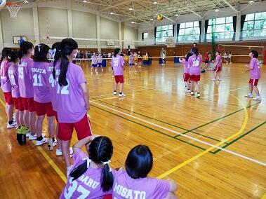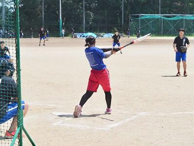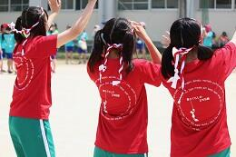 オンライン生徒総会
 6月2日(水) 令和３年度生徒総会がオンラインで行われました。感染症対策のため、体育館に集合しての総会は見送り、Google フォーム を利用したオンラインで行われました。全ての議案に対し、フォームで賛否の回答後、それをスプレッドシートにまとめて議決する方法がとられました。不慣れな作業を伴っての総会となりましたが、本部役員を中心に念入りに準備が進められ、無事総会を終えることができました。また、総会に先立って、今般関東大会に出場するカヌー部と弓道部の壮行会が放送で行われ、両部活に激励の言葉が送られました。
6月2日(水) 令和３年度生徒総会がオンラインで行われました。感染症対策のため、体育館に集合しての総会は見送り、Google フォーム を利用したオンラインで行われました。全ての議案に対し、フォームで賛否の回答後、それをスプレッドシートにまとめて議決する方法がとられました。不慣れな作業を伴っての総会となりましたが、本部役員を中心に念入りに準備が進められ、無事総会を終えることができました。また、総会に先立って、今般関東大会に出場するカヌー部と弓道部の壮行会が放送で行われ、両部活に激励の言葉が送られました。 １学年保護者対象進路講演会
 5月22日(土) 10:00-12:00 １学年保護者対象の進路講演会を実施しました。本校進路指導部長より「高校で学ぶということ」「今後求められる力」「大学で何を学ぶか」「大学入試情報」を中心に講演を行い、最後に学年主任から１学年の状況について報告しました。ご参加いただきました皆さまには感染症防止対策等にご協力いただき、ありがとうございました。
5月22日(土) 10:00-12:00 １学年保護者対象の進路講演会を実施しました。本校進路指導部長より「高校で学ぶということ」「今後求められる力」「大学で何を学ぶか」「大学入試情報」を中心に講演を行い、最後に学年主任から１学年の状況について報告しました。ご参加いただきました皆さまには感染症防止対策等にご協力いただき、ありがとうございました。 エピペン・AED職員研修
 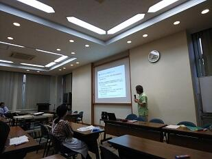
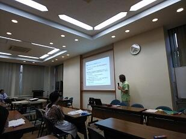 2・３年保護者対象進路講演会
 5月15日(土) ２・３学年の保護者対象に進路講演会を実施しました。本校での進路指導の取組、今後の予定、大学入試の現状等について説明させていただきました。また、２学年の保護者の方には修学旅行の説明会も併せて実施させていただきました。検温、健康チェックシートの提出、座席指定など、感染症拡大防止のためにご協力をいただき、誠にありがとうございました。
5月15日(土) ２・３学年の保護者対象に進路講演会を実施しました。本校での進路指導の取組、今後の予定、大学入試の現状等について説明させていただきました。また、２学年の保護者の方には修学旅行の説明会も併せて実施させていただきました。検温、健康チェックシートの提出、座席指定など、感染症拡大防止のためにご協力をいただき、誠にありがとうございました。なお、同日実施が予定されていたＰＴＡ総会は中止とし、書面での開催とさせていただきました。
教育相談職員研修
 4月15日(木) 15:30-16:20 本校に勤務のスクールカウンセラーさんを講師に教育相談の職員研修を行いました。一般的な事例を取り上げ、心理学的な側面での考察を交えながら、悩みを抱える生徒にどのように寄り添い、効果的な支援をしていくかを学びました。限られた時間内でしたが、職員間で意見交換できる貴重な機会にもなりました。
4月15日(木) 15:30-16:20 本校に勤務のスクールカウンセラーさんを講師に教育相談の職員研修を行いました。一般的な事例を取り上げ、心理学的な側面での考察を交えながら、悩みを抱える生徒にどのように寄り添い、効果的な支援をしていくかを学びました。限られた時間内でしたが、職員間で意見交換できる貴重な機会にもなりました。 令和３年度入学式
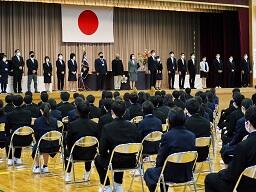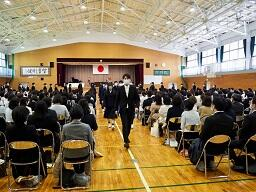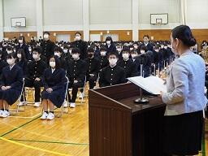
 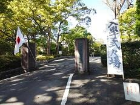
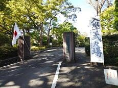 後期終業式

3月24日(水)感染症防止のため後期終業式は放送で行われました。その後、応接室にて賞状伝達が行われました。今回の表彰は以下のとおりです。
美術部 第65回全日本学生美術展覧会 佳作２名 入選５名
生物部 千葉県高等学校文化連盟自然科学専門部会 研究奨励賞 ４名
書道部 第73回千葉県小中高校書き初め展覧会 千葉県議会議長賞 １名
受験報告会
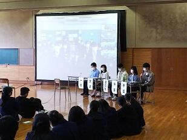
3月22日(月)9:30～11:00 この3月に卒業した卒業生10名(理系5名・文系5名)を招いて受験報告会を実施しました。理系志望の1・2年生は体育館、文系志望の2年生は第2体育館、文系志望の1年生は新型コロナウィルス感染症対策のため、指定教室で第2体育館の様子をリモートで視聴という形式で行われました。大きな変革があった大学入試を乗り越えた卒業生からは、志望校や併願校の決定や勉強方法について重みのある体験談を聞くことができ、有意義な時間を過ごすことができました。会が終わっても、進路室に多くの在校生が訪れ、卒業生に積極的に質問している光景がみられました。
高校生向け出前講座「せんせいっていいもんだ」
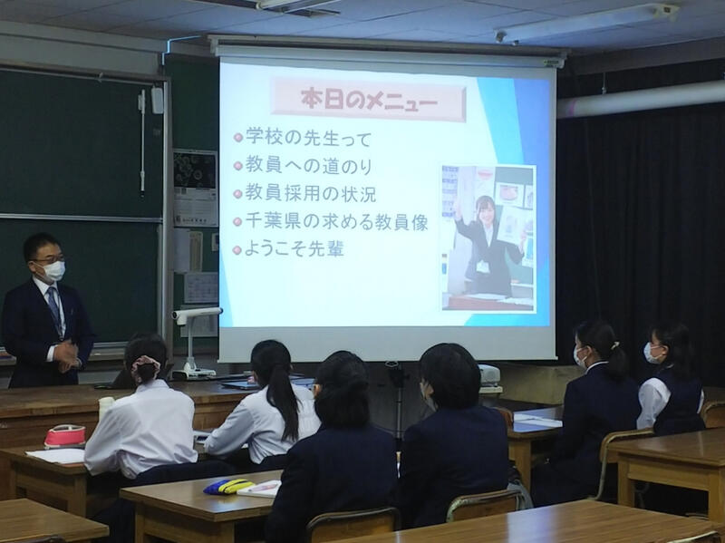11月19日(木) 現在佐倉市の小学校でご活躍中の本校卒業生の方と、教職員課の先生をお招きして、高校生向け出前講座「せんせいっていいもんだ」を実施しました。教師の仕事に関心のある１年生約20名が聴講しました。教職員課からは「千葉県教員になるには」ということで、県教育委員会の取組を含めて具体的な話を聴くことができました。本校卒業生の方からは、具体的な仕事内容や教師の魅力などについて、後輩たちに向けての熱いメッセージとともにお話をいただきました。最後には生徒たちから活発な質問も寄せられ、60分の時間が短く感じられる有意義な時間を過ごすことができました。
第３回学校説明会
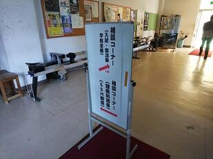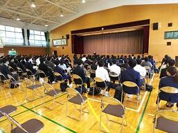

1・2年保護者対象進路説明会及び2年保護者対象修学旅行説明会
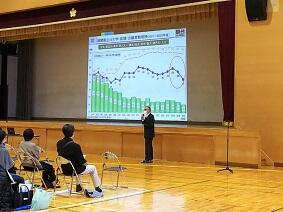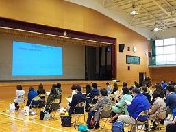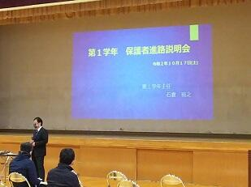
令和２年度地域交流懇談会（1000ヶ所ミニ集会）
 9月16日（水）開かれた学校づくり委員の方をはじめ、地元町内会・自治会、地元小学校や佐倉市役所危機管理室、佐倉市役所資産税課、佐倉市中央公民館、本校ＰＴＡや同窓会の方をお招きして地域交流懇談会を開催しました。「佐倉高校に期待すること」「安全・防災を中心とした学校・家庭・地域との連携」などをテーマに、第２グランド周辺の環境整備や通学マナーなどについて活発な意見交換が行なわれました。
9月16日（水）開かれた学校づくり委員の方をはじめ、地元町内会・自治会、地元小学校や佐倉市役所危機管理室、佐倉市役所資産税課、佐倉市中央公民館、本校ＰＴＡや同窓会の方をお招きして地域交流懇談会を開催しました。「佐倉高校に期待すること」「安全・防災を中心とした学校・家庭・地域との連携」などをテーマに、第２グランド周辺の環境整備や通学マナーなどについて活発な意見交換が行なわれました。 大学模擬授業

 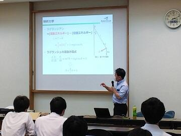
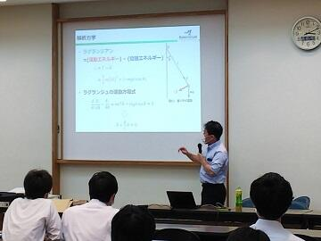
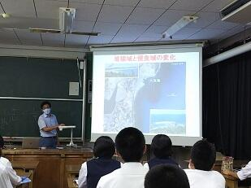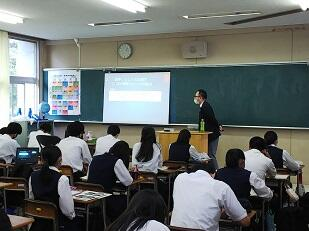

生徒会役員選挙

 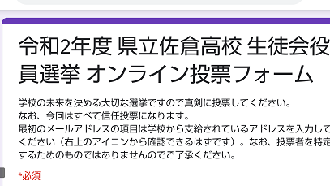
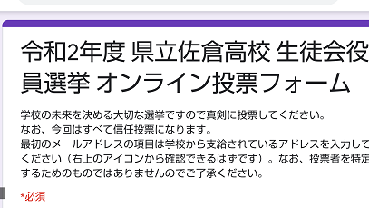 ようこそ先輩 ～僕の大学・私の大学～


令和3年度大学入学共通テスト出願説明会
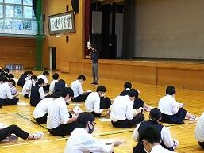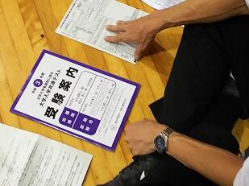
前期防災訓練
 8月25日(火) ７限に前期防災訓練を実施しました。武道場の工事に伴い、学年別での訓練となりましたが、冷静かつ迅速な行動が見られました。３学年では東館３階より垂直式の救助袋を使った降下訓練のデモンストレーションもありました。
8月25日(火) ７限に前期防災訓練を実施しました。武道場の工事に伴い、学年別での訓練となりましたが、冷静かつ迅速な行動が見られました。３学年では東館３階より垂直式の救助袋を使った降下訓練のデモンストレーションもありました。 第１回学校説明会
 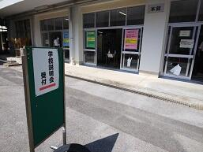
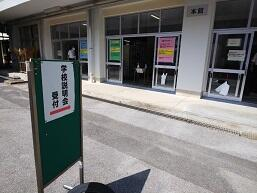
県教委によるICT活用実態視察
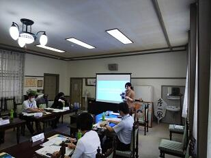
 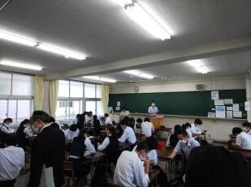
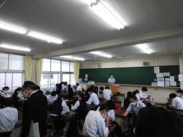 校内授業研修週間
 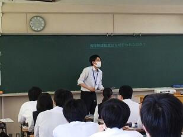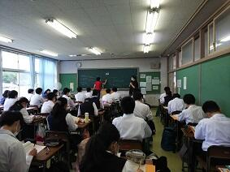
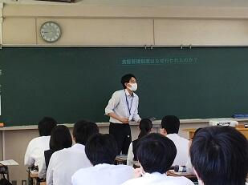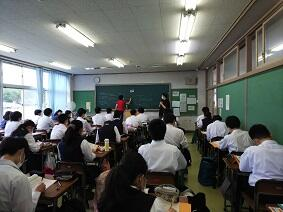 第１回開かれた学校づくり委員会
学校再開
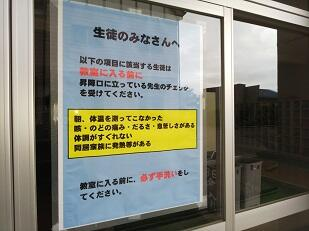
 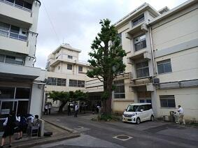
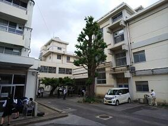 エピペン・ＡＥＤ職員研修
 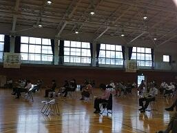
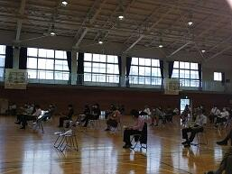
１・３年生登校日
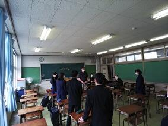


令和２年度入学式・校章贈呈式


離退任式職員とのお別れ

第72回卒業証書授与式


 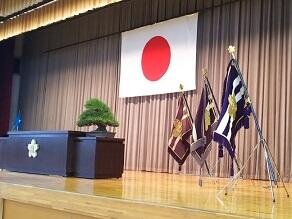
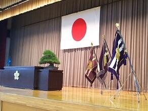
PTA整備委員会の皆様によって飾られた花道 歴史と伝統、未来への飛躍を象徴する３本の校旗
同窓会入会式
前期選抜結果発表
なお、各受検生あての結果の通知については本日郵送しましたので到着次第ご確認ください。

音楽Ⅱ「関西修学旅行の思い出を歌う」作品発表会
＜発表作品＞
『清水寺』
『夜の紅葉』
『閣々鹿々』
『cervo～イタリア語で鹿という意味～』
『修学旅行の歌の唄』
ほか
書道Ⅱ研究授業「漢字かな交じり書の創作」
２月６日（木）２時間目、書道の研究授業が行われました。漢字とかなの調和、効果的な構成を考えることをテーマに授業が展開されました。芸術の奥深さを実感できる興味深い授業でした。
東京外国語大学との連携協定締結調印式
東京外国語大学のウェブページにも紹介されました。


進路指導職員研修
冬季休業前全校集会
賞状披露者（団体）、関東・全国大会出場部活動は以下のとおりです。
・ラグビー部 第99回全国高等学校ラグビーフットボール大会千葉県大会 第５位
・令和元年度千葉県高等学校ボルダリング大会男子個人の部第１位 １ーC安川君
・千葉県高等学校文化連盟将棋大会 男子A級準優勝 ２－C山本君
→ 全国大会出場（福島県）
・第30回関東地区高等学校文化連盟将棋大会 男子個人戦 第５位 ２－C山本君
・吹奏楽部 第45回千葉県アンサンブルコンテスト金賞 サクソフォーン５重奏
→ 第25回東関東アンサンブルコンテスト出場（宇都宮市）
・千葉大学主催高校生理科研究発表会
優秀賞 化学Ⅰ分野 薄田・江尻・安井・山口
優秀賞 物理Ⅰ分野 月山・後屋敷
製本講座を行いました
講座では、笠井さんのご指導の下ハードカバーの本を解体したり、笠井さんが撮影してきてくださった工場内の動画を交えながら、本ができていく様子を見届けました。また、全国の書店員さんから人望の厚い橋本さんに、出版の営業についてお話をうかがいました。
質疑応答の時間では、新しい出版レーベルを立ち上げ、本を刊行したばかりの二人に、個人で本をつくり流通させるにはどうすればいいのか、具体的な戦略を教えていただきました。
本をつくる喜びや、本を送り出すたくさんの人々の想いを体感できるような講座でした。

音楽Ⅲ「卒業演奏会」
次回は12日（木）昼休みです。
１ テノール独唱（３Ｄ井上）
「霧と話した」,"L'ultima canzone"（最後の歌）
２ ピアノ演奏（３Ａ木村）
「ソナタ第17番＜テンペスト＞」より第一楽章
３ ソプラノ独唱（３Ｄ布施）
"O sole mio", 歌劇「ジャンニ・スキッキ」より
"O mio babbino caro"（私のお父さん）
全員でクリスマスソング☆"Winter Wonderland"「ジングルベル」
音楽Ⅲ「卒業演奏会」2
火曜日に続き、本日昼休み、音楽室にて音楽Ⅲ履修者による「卒業演奏会」を開催しました。初日に劣らぬ盛況ぶりで、御来場いただきました皆様に御礼申し上げます。音楽科
１ ピアノ独奏（３Ｄ藤枝）
クープランの墓より「プレリュード」
２ ソプラノ独唱（３Ｂ堀部）
"Sogno"（夢）
"Stand alone"
３ ギター独奏（３Ｂ伊藤）
「ノルウェーの森」
全員で、クリスマスソング☆
"Winter Wonderland"「ジングルベル」"We wish you a merry Christmas"
第３学年保護者進路説明会
第２回英語教育拠点校公開授業
PTA文化講演会 ピラティス講座
２学年進路説明会
高校生向け出前講座「せんせいっていいもんだ」
第３回学校説明会
令和元年度スケアード・ストレイト自転車交通安全教室
雨天のため、体育館での実施となりましたが、具体的な講話や大迫力の演技によって。受講した１・２年生は交通事故の被害者にも加害者にもならないように交通ルールや交通マナーを遵守したり、万一に備えて保険加入を確認することの大切さを改めて学びました。
普通救命講習会

英語教育拠点校事業に係る公開授業

大学模擬授業(2年生）
本校の卒業生でもある国際基督教大学教養学部 金子 拓也 先生をはじめとして、千葉大学から６名、東北大学、東京理科大学、中央大学、立教大学、上智大学、千葉県立保健医療大学など計１３名の先生方から６０分の講義を２講座、受講することができました。これから進路選択に向かう２年生にとって、とても良い機会となりました。
＜写真下段 本校ＯＢ国際基督教大の金子先生による講義＞
ようこそ先輩


1学年総合的な探究の時間

3年生センター試験説明会

野球応援練習


いよいよ明日７月10日から第101回全国高校野球選手権千葉大会の熱戦が各地で始まります。本校野球部の初戦は、来る７月13日（土）11:30からナスパスタジアムで行われる予定です。相手は、小見川高校と流通経済大学付属柏高校の試合の勝者となります。今日は、応援委員会と吹奏楽部による野球応援の合同練習が第１グラウンドで行われました。顧問の先生方や野球部の保護者の方々が見守るなか応援練習が行われました。仲間を応援する熱い気持ちが選手だけでなくその場にいるすべての人たちに伝わるすばらしい応援練習だったっと思います。皆さま、７月13日の応援よろしくお願いいたします。
地域交流懇談会（1,000か所ミニ集会）
佐倉図書館新町複合施設に関するワークショップについて


新入生へ。部活動を一緒に頑張りましょう。


SSH・SGH合同課題研究発表会
平成３１年３月１８日（月）SSH・SGH合同課題研究発表会が行なわれました。
午前９時に校長先生の挨拶から始まり、本校２年生によるSGＨ口頭発表２件（言語：英語）、ＳＳＨ口頭発表２件（言語：日本語）が行なわれました。発表が終わると会場からは手が挙がり、発表の根拠となるものについて質問したり、研究の生かし方について質問する生徒がいました。発表者は、丁寧に答えていました。その後休憩を挟み、ＳＳＨは体育館でポスター発表、ＳＧＨは６箇所に分かれ、プレゼンテーションソフトを用いた発表を行ないました。午後は、地域交流施設で、ＳＧＨエキシビジョンが行なわれ、本校１年生の発表が行なわれました。SSH運営指導協議員の皆様、SGH運営指導協議員の皆様、佐倉市中央公民館長様、PTAの皆様、同窓会長様、開かれた学校づくり委員長様、地域の皆様、県教育委員会の皆様、県内の高校の先生、県外の高校の先生、メロス言語学院の学生の皆様に御来校いただき生徒の発表を御覧いただきました。朝早くからありがとうございました。


平成31年度入学許可候補者発表
卒業式に向けての式歌練習
スマホ・ケータイ安全教室
 平成３０年１２月２１日（金）午前１１時から本校体育館において、NTTドコモ株式会社スマホ・ケータイ安全教室インストラクター上島あい先生をお招きし、御講演いただきました。主にSNSやコミュニケーションアプリのリスク（個人情報が特定され犯罪に巻き込まれる危険性、文字のみのやりとりのため気持ちが伝わらないことによる誤解やトラブルに結びつく危険性など）について、具体的にお話しいただきました。人権に関わることや心の問題にも言及し、トラブルについて他人事として考えないことが重要だということがよくわかる内容でした。
平成３０年１２月２１日（金）午前１１時から本校体育館において、NTTドコモ株式会社スマホ・ケータイ安全教室インストラクター上島あい先生をお招きし、御講演いただきました。主にSNSやコミュニケーションアプリのリスク（個人情報が特定され犯罪に巻き込まれる危険性、文字のみのやりとりのため気持ちが伝わらないことによる誤解やトラブルに結びつく危険性など）について、具体的にお話しいただきました。人権に関わることや心の問題にも言及し、トラブルについて他人事として考えないことが重要だということがよくわかる内容でした。 防災避難訓練が行われました。


３年生保護者進学説明会


初任者研修の研究授業がありました

英語教育拠点校公開授業を行いました。
５・６限の英語の授業を高等学校及び中学校の先生方に公開しました。どの授業もオールイングリッシュで言語活動の充実した授業が展開されていました。生徒もいきいきと学習活動を行っていました。その後、来校された１５名の先生方と本校英語教員で協議を行いました。授業に対する質疑応答や授業の在り方についての意見交換等がなされました。また、お招きした土気高等学校長、今井先生から講評をいただくともに講義をしていただきました。英語教育の質を高めるヒントがたくさん得られた協議会でした。

本校で初任者研修会が開かれました。
採用1年目の高等学校国語の先生方８名が本校に集い、総合教育センターの先生、初任者を指導されている国語の先生とともに研修会を行いました。本校の授業を参観していただいた後、研究協議を行いました。授業方法等について意見が交わされ実りある研修となりました。


高校生向け出前講座「せんせいっていいもんだ」

前半は、教育委員会 教職員課管理主事の田中宏知さんから教員になるため学校選択や学校種別の教員免許状取得の必要性、千葉県の教員採用状況などの説明していただきました。
後半は本校卒業生の富里市立富里南小学校教諭の段木遥夏先生から「先生というお仕事を知ってもらう」という「今日のめあて」を示してもらい、高校時代の部活や勉強、小学校の先生の仕事について担任目線での話を伺うことができました。日常の児童との様子などをユーモアを交えながら紹介し、教員の仕事についてわかりやすく話をしていただきました。
学力向上交流会が行われました。
「生徒の思考を深めさせる効果的な学習方法」をテーマに、本校の授業を御覧いただき、その後体育館で研究協議を行いました。授業は普段の授業を公開しましたが、生徒の熱心な学習への取組の様子、議論、発表等の様子を御覧いただきました。
授業の様子

全体会の様子

研究協議の様子


ワッフル販売
この企画は、国際交流委員会による「オランダ月間」の一環として行うものです。
事前の告知の効果もあり、昼休みの販売開始と同時に多くの生徒が購入に訪れ、開始からわずか15分で120個のワッフルがすべて売り切れるほどの人気ぶりを見せました。
売上金はユニセフに寄付する予定です。
購入してくれた生徒の皆さん、御協力ありがとうございました。
SGH海外研修報告会＆SSHポスターセッション
平成３０年１０月９日（火）６限にＳＧＨ海外研修報告（オーストラリア研修、シンガポール研修）７限に理数科２年生によるＳＳＨ課題研究ポスターセションを行いました。６限は、オーストラリア及びシンガポールで研修を行った生徒が、現地での活動と現地校で行った課題研究に係るプレゼンテーションについて報告しました。
７限は、理数科２年生がＳＳＨに係る課題研究のポスター発表を１年生全員に向けて行い、１年生はポスター発表の方法等を学習しました。
ＳＧＨ海外研修報告会詳細 ←こちらも御覧ください
ＳＳＨポスターセッション詳細 ←こちらも御覧ください。
前期終了「校長講話」
ＧＬ探究「ポピュリズムの台頭と多文化共生」
平成３０年９月１３日（木）７限ＧＬ探究（総合的な学習の時間）において、千葉大学法政経学部教授 水島治郎先生をお招きし、「ポピュリズムの台頭と多文化共生 ー混迷する現代世界を千葉から考えるー」というテーマで御講演いただきました。課題研究においてグローバル社会を捉える上で大変参考になるお話でした。
詳細はこちらをクリックしてください。
↓ ↓ ↓
SGHのページ GL探究「ポピュリズムと多文化共生」講演会
「ＳＳ課題研究Ⅱ」口頭発表会が行われました。
本日、理数科３年生による課題研究発表会が行われました。２年間の課題研究の成果を本校理数科全生徒の前で発表しました。発表は、１８組で、物理部門６，化学部門６、生物部門５、数学部門１でした。３年生は個々の研究成果をプレゼンテーションソフトを用いて工夫しながら発表し、１・２年生は熱心に聞きつつ、発表後には活発に質問をしていました。質問に対して３年生は丁寧に答えていましたが、その内容は２年間の研究の深さがうかがわれるものばかりでした。この発表会は、本校の理数科生徒が縦のつながりを持つ機会でもあります。３年生の発表は、１・２年生の研究に大きな影響を与えたようです。
SSHのページ「SS課題研究Ⅱ口頭発表会」 ← こちらもご覧ください。
英語教育拠点校公開授業
GL探究「課題研究 1分間スピーチ」
平成30年9月4日（火）6，7限 第１学年普通科において、課題研究テーマを決めるための1分間スピーチ（個人発表）を行いました。千葉大学と東京大学の先生２名に御来校いただきテーマの決め方、研究の方向性や研究方法について助言をいただきました。今後は、テーマについて外国の事例を含めた先行事例やテーマを絞り込んで、研究グループを編成していきます。

野球応援練習
１回戦は、７月１３日（金）青葉の森球場第１試合です。お時間のある方は、野球部の応援をよろしくお願いします。また、伝統校らしい応援も御覧ください。

科学の甲子園Jr 学習会
物理分野（大和地伸雄教諭）では、水風船を３階から落下させたときに割れないような構造物を紙で製作しました。生物分野（西村さつき教諭）では、ちりめんじゃこの中に混ざっているタコやイカ等の小さな生物を探しました。
８月下旬には、化学分野と数学分野の実習が行われる予定です。


佐倉市選挙管理委員会と協働した政治・経済の授業